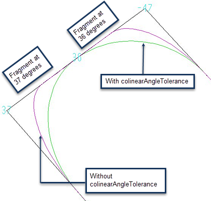

setlayer curve_target
LITHO DENSEOPC Setup File Commands
Subset of setlayer command
Creates a target that mimics the final image.
Usage
setlayer output_layer_name = curve_target input_layer_name [criticalDistance value]
[cornerRadius value] [cornerRadiusConcave value] [cornerRadiusConvex value]
[stepRadiusConcave value stepRadiusConvex value] [minStepTanDist value]
[jogRampConcave value jogRampConvex value] [colinearAngleTolerance degrees]
[lineEndRatio value] [linearRatio {true | false}] [spaceEndRatio value]
[lineEndWidth value] [spaceEndWidth value] [maxJog value]
[roundCorner {true | false} [roundedCornerRadius value]]
[preferMid {true | false} [midSpanExt value] [maxMidSpan value]] [enclose layer by value]
[taglayer layer overrides]
Arguments
- output_layer_name
A required keyword specifying the name of the new output target layer. The new layer is created and the results of the operation are written to the layer. This layer must be a valid Calibre layer containing polygon data.
- input_layer_name
A required keyword specifying the name of the input layer.
- criticalDistance value
The smallest feature that must be resolved. The default value is (Ro/3), where Ro is the resolution value obtained from the optical model parameters (lambda/NA).
This parameter is typically specified, rather than using the default value. You can optimize the value around the default value by plus or minus 50% to obtain the best results for your applications.
- cornerRadius value
An optional argument that is used at corners to estimate the achievable target. You should optimize this parameter around the default value by plus or minus 50% to obtain the best results for their applications.
The value must be greater than 0. The default is criticalDistance.
- cornerRadiusConcave value
The radius of curvature used to estimate the achievable target for concave corners only. This value is also used for space ends. The value must be greater than 0. The default value is cornerRadius, which in turn defaults to criticalDistance.
- cornerRadiusConvex value
The radius of curvature used to estimate the achievable target for convex corners only. This value is also used for line ends. The value must be greater than 0. The default value is cornerRadius, which in turn defaults to criticalDistance.
Note:In jogs and s-shapes that have overlapping convex and concave corners, the larger of cornerRadiusConcave or cornerRadiusConvex is used.
- stepRadiusConcave value stepRadiusConvex value
An optional pair of arguments that allow setting a smaller value than cornerRadius for S‑steps. (An S‑step is a concave corner and a convex corner separated by a single fragment.) You cannot use stepRadiusConcave and stepRadiusConvex separately.
The stepRadius arguments are ignored for overlapped S‑steps when roundCorner true is set.
The setting for both arguments must be in the range defined by the minimum and maximum of cornerRadius, cornerRadiusConcave, and cornerRadiusConvex. If they are set to a value outside the range, the run issues a warning and uses the nearest end of the range.
- minStepTanDist value
An optional argument that sets a minimum tangent distance for both legs of a step shape. If the tangent distance on either side is not met, the step is smoothed. In effect, it defines the minimum curvature.
The default value is 0, no required minimum distance.
Figure 1. Effect of minStepTanDist
- jogRampConcave value jogRampConvex value
An optional pair of arguments that allow setting different values for the distance between the tangent point and the jog corner for concave and convex jog corners. (Whether an edge segment is a fragment or a jog is controlled by maxJog.) You cannot use jogRampConcave and jogRampConvex separately.
The setting for both arguments must be in the range defined by the minimum and maximum of cornerRadius, cornerRadiusConcave, and cornerRadiusConvex. If they are set to a value outside the range, the run issues a warning and uses the nearest end of the range.
- colinearAngleTolerance degrees
An optional parameter that specifies in degrees how different two adjacent fragments may be and still be considered as collinear. The value must be an integer. The default value is 0 degrees.
This option is useful when a design contains non-45 skew angles as it can allow the algorithm to better recognize a straight edge, as shown in the figure below. The sharper outer contour (maroon) occurred because the two fragments of the edge were treated independently. Adding “colinearAngleTolerance 1” produced the smoother green contour.
Figure 2. Effect of colinearAngleTolerance 1- lineEndRatio value
Allows for the specification of an elliptical curve at line ends. The curve is tangent to the side at a distance value from the corner (where value is computed by multiplying the width of the line by the ratio). The default ratio is 0.5 (resulting in a circular curve). This applies to narrow line ends whose width is less than two times the corner radius.
Because of the layout resolution, the last segment of the elliptical curve may be collinear with the side, as in the right curve in Figure 3. The end of the ruler (shown by the box with 0.0520) appears to extend past the curve and into the flat portion. The internal calculations are done using floating point numbers and then rounded to integers to give coordinates in dbus.
- linearRatio {true | false}
An optional keyword that, if set to false, Calibre nmOPC makes the following adjustments to the curvature of the smooth target:
For the line ends smaller than lineEndWidth (or if not defined, smaller than 2 * cornerRadius):
On the line end (LE) fragment, the tangent point of the curve is set at the middle of the LE fragment.
On the LE adjacent fragment, the tangent point of the curve is set at a distance specified by that particular (LE CD) * lineEndRatio away from the corner.
For line ends larger than lineEndWidth (or if not defined, smaller than 2 * cornerRadius) the tangent point of the curve is set at a cornerRadius distance away from the corner for both LE and LE adjacent fragments.
Figure 3 illustrates an example using the following settings:
criticalDistance 0.050 cornerRadius 0.052 lineEndRatio 1.0Note that sharp transitions in curvature radius can occur when the lineEndWidth is reached.
Figure 3. Curvature Example
If linearRatio is set to true, Calibre nmOPC makes the following adjustments to the tangent point of the curvature at the LE adjacent fragment:
No adjustment occurs for line ends smaller than cornerRadius.
For the line ends larger than cornerRadius but smaller than 2 * cornerRadius, the tangent point of the curve is set at a distance specified by that particular (LE CD) * lineEndRatio * multiplier.
The multiplier is an additional scaling parameter that changes linearly between cornerRadius and 2 * cornerRadius.
No adjustment occurs for the line ends larger than 2 * cornerRadius.
Figure 4 shows a comparison of smooth curves with linearRatio set to false (in blue) and true (in red) with the rest of the parameters as follows:
criticalDistance 0.050 cornerRadius 0.052 lineEndRatio 1.0Setting linearRatio allows for smoother transitions.
Figure 4. Comparisons of linearRatio True Versus False
In cases where the lineEndWidth is defined and is <= 2 * cornerRadius:
No adjustment occurs for line ends smaller than lineEndWidth.
For the line ends larger than lineEndWidth but smaller than 2 * cornerRadius, the tangent point of the curve is set at a distance specified by that particular (LE CD) * lineEndRatio * multiplier.
The multiplier is an additional scaling parameter that changes linearly between lineEndWidth and 2 * cornerRadius.
No adjustment occurs for line ends larger than 2 * cornerRadius.
In cases where the lineEndWidth is defined and is > 2 * cornerRadius:
If the curve’s tangent point on the line end is farther from the corner than the cornerRadius value, the point is moved closer to the corner (by changing the lineEndRatio value).
This means that the tangent point on the line end with a width equal to lineEndWidth (maximal) is set at a distance (the cornerRadius value) from the corner. This provides a smoother transition.
No adjustment occurs for line ends larger than lineEndWidth.
The default value is false.
- spaceEndRatio value
An optional flag that allows for the specification of an elliptical curve at space-ends. This option otherwise performs similarly to the lineEndRatio option. The default value is the lineEndRatio setting.
- lineEndWidth value
The minimum width at which an edge with two convex corners is not classified as a line end. Edges with length less than value are treated as line ends. The units for value are user units. The default value is 2 * cornerRadiusConvex.
- spaceEndWidth value
The minimum width at which an edge with two concave corners is not classified as a space end. Edges with length less than value are treated as space ends. The units for value are user units. The default value is 2 * cornerRadiusConcave.
- maxJog value
The maximum length at which an edge is considered a jog and not a feature. Smaller values cause fewer edges to be considered jogs. The units for value are user units. The default value is approximately 0.292893 * radius, where radius is the minimum of cornerRadiusConcave, cornerRadiusConvex, and cornerRadius.
- roundCorner {true | false} [roundedCornerRadius value]
An optional parameter that causes Calibre nmOPC to round concave corners that are shorter than cornerRadiusConcave. When set to true, the target is moved out towards the printed image by roundedCornerRadius. You can use the optional roundedCornerRadius keyword to increase the distance from the original corner that the target is moved. The default value for this parameter is false.
- preferMid {true | false}
If set to true, this parameter specifies that the midpoint handler should be used where possible, instead of S‑steps or quarter circles. This means that instead of a curve being drawn, a straight line will be used. For some curve targets, this is may be a more appropriate fit than curves that are typically used. The default value for this parameter is false.
- midSpanExt value
Specifies a floating point value between 0 and 10 that controls the slope of the line drawn when preferMid is enabled. The default value is 1, which draws a 45-degree angle line through the mid point of a span. Increasing the value of midSpanExt increases the length of the line drawn through the span and results in a shallower slope. By default, the extent of the line drawn is equal to the length of the span (value is set to 1). Increasing the value to 2 means that the extent of the line drawn will now be twice as long as the span, and the slope will be much shallower.
- maxMidSpan value
Specifies a length in user units (0 to 1 micron) that determines the maximum size of a span to be handled by the midpoint handler when preferMid is enabled. Spans longer than this value will be represented by curves. The default value is 2⁄3 of the critical distance (CD).
- enclose layer by value
An optional flag that allows the target to be drawn around contacts and vias, where value specifies the amount of enclosure or internal distance requested for OPC. This is similar to contact enclosure as specified by the wafer_enclose command, but the target itself will enclose the contact instead. This can be useful if the target is being used outside of Calibre nmOPC.
- taglayer layer overrides
An optional keyword set that specifies a marker layer (layer) and setting overrides for fragments that interact with layer. The following arguments can appear as overrides:
cornerRadiusConcave
cornerRadiusConvex
stepRadiusConcave
stepRadiusConvex
colinearAngleTolerance
lineEndRatio
linearRatio
spaceEndRatio
lineEndWidth
spaceEndWidth
roundCorner
roundedCornerRadius
preferMid
midSpanExt
maxMidSpan
Description
The purpose of the setlayer curve_target command is to create a target that mimics what the final image is going to look like. Using this command, you look at the differences between the image and the curve target and adjust the parameters to more closely match what the final image looks like. By having a feasible target (one that can actually be printed on silicon), the optimization can be simplified, resulting in better OPC results.
Examples
setlayer c_target = curve_target target_fill \
criticalDistance 0.040 \
cornerRadiusConcave 0.020 \
cornerRadiusConvex 0.040 \
lineEndRatio 1.0